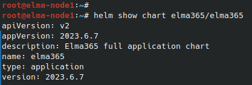

BRIX Enterprise supports Transport Layer Security (TLS) 1.2+ for incoming and outgoing traffic. To automatically switch the application to work over the secure HTTPS protocol, enable TLS encryption support.
Enabling TLS for the BRIX application consists of three stages:
- Prepare a secret with a certificate for working via HTTPS.
- Make changes to the configuration file.
- Apply TLS parameters for BRIX Enterprise.
Step 1: Prepare a secret with a certificate for working via HTTPS
For details, see Create a secret with a certificate for HTTPS operation.
Step 2: Make changes to the configuration file values-elma365.yaml
Начало внимание
Before editing the values-elma365.yaml file, make a backup copy of it, as incorrect parameter settings may cause BRIX application malfunction.
Конец внимание
- Fill put the configuration file
values-elma365.yamlto enable TLS.
To enable encryption support, specify true in the parameter global.ingress.onpremiseTls.enabled. In this parameter, specify the name of the certificate for working via https, for example, elma365-onpremise-tls. The certificate must be issued for the domain name FQDN in the parameter global.host, through which the system will be accessible, for example example.com.
global:
## domain (FQDN) or ip address where the system is available
host: 'example.com'
ingress:
## enable host in ingress (value taken from host)
## for installed s3 minio via elma365-dbs charts, specify in the minio block
## the value in the hosts parameter in the values-dbs.yaml file
hostEnabled: false
onpremiseTls:
## enable https
enabled: true
## name of the secret with certificates for https
secret: "elma365-onpremise-tls"
Filling in the root CA parameters for configuring trust for a custom CA certificate
You can configure trust support if you used a self-signed certificate with OpenSSL or a certificate issued by a local certificate authority when creating a secret for HTTPS operation. This can be done in two ways:
kubectl create configmap elma365-onpremise-ca \
File example: global: |
Начало внимание
Before applying TLS parameters for the BRIX application, ensure that the S3 file storage operates over the HTTPS protocol (uses TLS encryption). Reconfigure the S3 file storage to work over the HTTPS protocol before enabling TLS support in the BRIX application.
Конец внимание
- Specify in the connection parameters that the S3 storage server uses TLS encryption. To do this, set
truein thedb.s3.ssl.enabledparameter.
...
db:
...
## connections settings for S3 file storage
s3:
method: PUT
accesskeyid: PZSF73JG72Ksd955JKU1HIA
secretaccesskey: aFDkj28Jbs2JKbnvJH678MNwiz88zKjsuNBHHs
bucket: s3elma365
backend:
address: example.com
region: us-east-1
ssl:
enabled: "true"
...
Step 3: Apply TLS parameters for BRIX Enterprise
You can update parameters for BRIX Enterprise in two ways: online and offline.
Update parameters online
- Determine the chart version with which the BRIX application was installed or updated:
helm show chart elma365/elma365
Example of command execution:

After the command execution, you see the chart version information in the version string. Save this value for the next step.
- Update the parameters using the
values-elma365.yamlconfiguration file. To do this, execute the following command specifying the installed chart version for the--versionflag instead of<elma365-chart-version>:
helm upgrade --install elma365 elma365/elma365 -f values-elma365.yaml --version <elma365-chart-version> --timeout=30m --wait [-n namespace]
Update parameters offline
Navigate to the directory with the downloaded BRIX chart and execute the command:
helm upgrade --install elma365 ./elma365 -f values-elma365.yaml --timeout=30m --wait [-n namespace]
It takes about 10-30 minutes to update the parameters. Wait for it to complete.